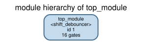
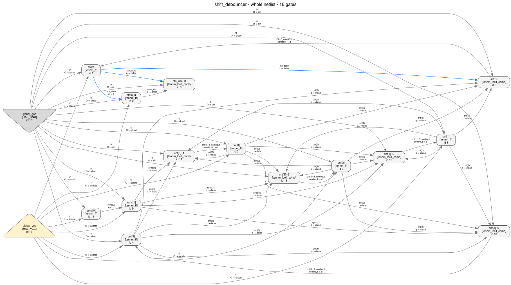
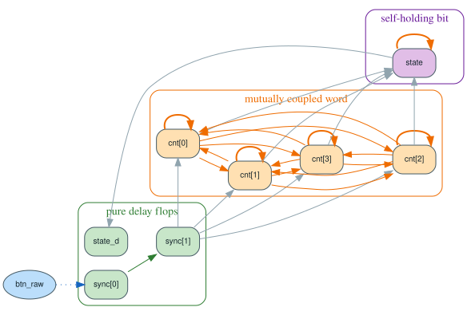
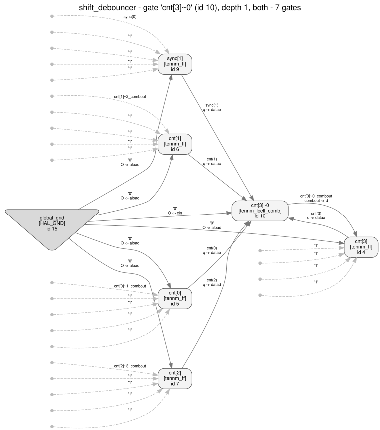
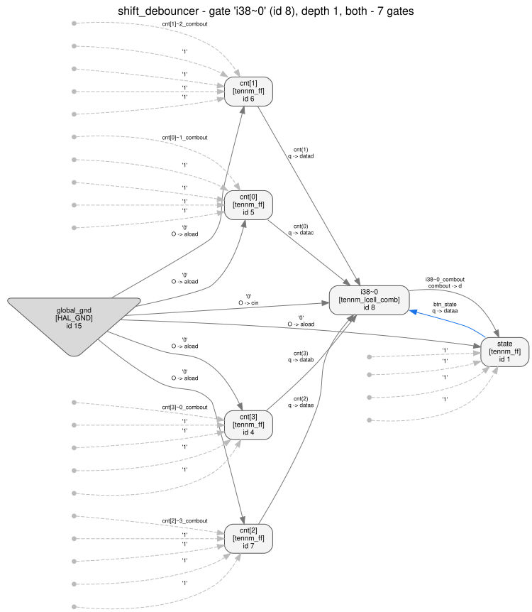
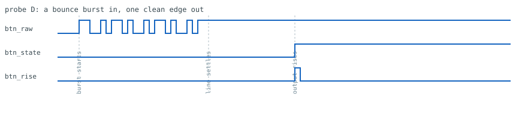

Reverse engineering an Agilex 3 netlist, walkthrough 08: shift_debouncer
A button debouncer — three textbook structures stacked on top of each other: a two-flop synchronizer, a saturating up/down counter, and a hysteresis bit. Synthesized for real by Quartus Prime Pro 26.1, then taken apart twice: once structurally with headless HAL, once behaviourally by driving the netlist as a black box. The interesting part is that the three blocks are not equally visible from the two directions. One of them is almost invisible structurally; one of them is almost invisible behaviourally; the third is the only one both halves agree on immediately.
- The design we are going to lose
- Synthesis, export, import
- First contact: the census
- Half A — structure (steps 1–8)
- Half B — behaviour (steps 9–12)
- Where the two halves meet
- Negative controls (step 13)
- Reconstruction (step 14)
- Recovered vs. lost
- Negative space: what neither half can tell you
- Exercises
- Reproducing all of it
1. The design we are going to lose
The exercise only means something if the answer exists in advance. The RTL handed to Quartus is a button debouncer built out of three stacked textbook blocks:
[... module header elided: ports clk, rst_n, btn_raw, btn_state, btn_rise ...]
// 1. two-flop synchronizer
reg [1:0] sync;
always @(posedge clk or negedge rst_n)
if (!rst_n) sync <= 2'b00;
else sync <= {sync[0], btn_raw};
wire sync_level = sync[1];
// 2. saturating up/down counter
localparam [3:0] CNT_MAX = 4'hF;
localparam [3:0] CNT_MIN = 4'h0;
reg [3:0] cnt;
wire at_max = (cnt == CNT_MAX);
wire at_min = (cnt == CNT_MIN);
always @(posedge clk or negedge rst_n)
if (!rst_n) cnt <= CNT_MIN;
else if ( sync_level && !at_max) cnt <= cnt + 4'd1;
else if (!sync_level && !at_min) cnt <= cnt - 4'd1;
// else: hold - THIS is the saturation
// 3. hysteresis (Schmitt) output
reg state;
always @(posedge clk or negedge rst_n)
if (!rst_n) state <= 1'b0;
else if (at_max) state <= 1'b1;
else if (at_min) state <= 1'b0;
// 4. rising-edge detector
reg state_d;
always @(posedge clk or negedge rst_n)
if (!rst_n) state_d <= 1'b0;
else state_d <= state;
assign btn_state = state;
assign btn_rise = state & ~state_d;Reformatted for width: the module header is elided, the long explanatory
comment blocks between statements are dropped, and each always block's
begin/end pair is removed with the branch bodies pulled up onto
their conditions. No statement was changed. Full commented source:
design.v. The intended behaviour, written before synthesis,
is spec.md — it is the answer key. Read it after
section 8, or before you start if you only want the tour.
Four properties make this worth a walkthrough:
- Two structurally identical two-flop chains.
sync[0]→sync[1]andstate→state_dare the same object: flop into flop, no enable, no feedback, one clock. A synchronizer and an edge-detector delay are indistinguishable by shape. Telling them apart needs an argument the graph cannot supply. - The threshold is not stored anywhere. "15 consecutive stable samples" is
the counter's width, not a constant. There is no
15in the netlist to find. - Every hold is inside a LUT. The saturation and the hysteresis are both implemented by the next-state function, never by a clock enable. Any analysis that groups registers by control-pin signature learns nothing here.
- The counter is not an adder. Because it must count both ways and clamp, Quartus never reached for the carry chain. Every arithmetic-recognition tool in the box returns "nothing found", and that is the correct answer.
A prediction before we start, straight off the RTL: eight flip-flops —
2 synchronizer + 4 counter + state + state_d. Keep it in mind; the
census in section 3 is where it gets tested.
2. Synthesis, export, import
Same flow as the rest of the series: post-synthesis only, so no fitting, no placement, no I/O buffers.
# quartus/shift_debouncer.qsf
set_global_assignment -name FAMILY "Agilex 3"
set_global_assignment -name DEVICE A3CW135BM16AE6S
set_global_assignment -name TOP_LEVEL_ENTITY shift_debouncer
set_global_assignment -name VERILOG_FILE ../design.v
set_global_assignment -name PROJECT_OUTPUT_DIRECTORY output_filesQuartus's own resource summary
(artifacts/quartus_synthesis.rpt) is
worth reading before the netlist, because it already tells you the shape of what is coming:
; Estimate of Logic utilization (ALMs needed) ; 5 ;
; ; ;
; Combinational ALUT usage for logic ; 6 ;
; -- 8 input functions ; 0 ;
; -- 7 input functions ; 0 ;
; -- 6 input functions ; 0 ;
; -- 5 input functions ; 5 ;
; -- 4 input functions ; 0 ;
; -- <=3 input functions ; 1 ;
; ; ;
; Dedicated logic registers ; 8 ;
; ; ;
; I/O pins ; 5 ;Five five-input functions and one small one, for eight registers. Nothing here needs more
than five inputs, which is why the whole design stays inside the primitive coverage that
tools/hal_agilex has validated — no fracturable 7-input mode, no synchronous
clear pin.
Notice what this .qsf does not contain. Walkthroughs
03 and 06
had to add ALLOW_SYNCH_CTRL_USAGE OFF and friends to stop Quartus mapping "the
counter parks at zero while idle" onto the flip-flop's synchronous-clear pin, which is outside
the validated primitive coverage. This design never asks for that, because it has no idle
state and no reset-to-zero condition other than rst_n — the counter is always
either counting or clamped. Step 2 confirms it from the other end: every sclr
pin in the export is tied to 1'b0.
quartus_syn shift_debouncer -c shift_debouncer
quartus_eda --simulation --format=verilog --tool=questasim \
--output_directory=simulation shift_debouncer -c shift_debouncer
python3 tools/hal_agilex import shift_debouncer.vo -o netlist.hal.vThe import step rewrites the vendor .vo into Verilog that HAL's front end can
read: inversions on ALM data inputs are folded into lut_mask, and
tri1 nets become plain wires tied to 1'b1. It is a rewrite, so it
has to be checked rather than trusted — check.py simulates both files side by
side for 600 cycles and requires zero mismatching output samples.
cnt[0], sync[1],
state. That is realistic — a lot of vendor exports do — but it means you have to
be disciplined. Every step below reaches its conclusion from structure or from measurement,
and the names are only ever used as labels afterwards. Where a step's conclusion would
have been unreachable without the names, the guide says so explicitly (there is exactly one
such place, and it is step 5).
3. First contact: the census
Before any analysis: what is actually in the file, and is all of it modelled?
python3 tools/hal_agilex inventory shift_debouncer.vo -o artifacts/inventory.findings.json[... artifact block elided: path, sha256, device A3CW135BM16AE6S, gate_count 14 ...]
"data": {
"histogram": {
"tennm_ff": 8,
"tennm_lcell_comb": 6
}
},
"id": "hal_agilex/inventory/fully-covered",
"status": "proven_under_assumptions",
"summary": "All 14 instances are tennm_ff or tennm_lcell_comb, each in a
configuration this package models and has validated against
the vendor export.",
"title": "Every primitive in the export is inside the validated coverage"Reflowed for width; the summary string is one line in
artifacts/inventory.findings.json.
tennm_ff, exactly as counted off the RTL: two synchronizer flops, four
counter bits, state, state_d. This is worth pausing on, because in
this series predictions usually don't hold — walkthrough 03 predicted ten shift-register
flops and got nine, because the top bit was a constant and synthesis deleted it. Here nothing
was optimised away: every flop in the source has a real, non-constant next state, so all eight
survive. A prediction that holds is evidence too; it just is not a lesson.
The other pre-flight command is the one that finds arithmetic:
python3 tools/hal_agilex recognize shift_debouncer.vo -o artifacts/recognize.findings.json "status": "unknown",
"summary": "0 carry chain(s) were followed and none matched the ripple-carry
adder pattern; this says nothing about what the design computes.",
"title": "No carry-chain adder recognized"4. Half A — structure
Everything in this half is produced by
analyze.py, which writes one numbered text file per step
into artifacts/ and a machine-readable
analysis.json that
check.py asserts on. It reads
netlist.hal.v and nothing else.
export HAL_BASE_PATH=/work/build HAL_PY_PATH=/work/build/lib
export PYTHONPATH=/work/build/lib:tools
python3 examples/agilex3_walkthroughs/08_shift_debouncer/analyze.py \
--repo . -o examples/agilex3_walkthroughs/08_shift_debouncer/artifacts1 The census, from HAL's side
$ cat artifacts/01_stats.txt
design name : shift_debouncer
gate library : AGILEX_TENNM
gates : 16
nets : 19
modules : 1
gate types:
tennm_ff 8
tennm_lcell_comb 6
HAL_GND 1
HAL_VCC 1
primary inputs ( 3): btn_raw clk rst_n
primary outputs ( 2): btn_rise btn_state
module tree:
top_module (id 1, type 'shift_debouncer') gates=16 submodules=0
8 flip-flops and 6 ALM cells. Three ports in, two out. Flat: one
module, so the hierarchy was flattened by synthesis and carries no
information about how the source was partitioned.
python3 tools/hal_viz module_tree netlist.hal.v -g AGILEX_TENNM.hgl -o images/module_tree.svg.
One node. The three-block structure the author wrote is not in here — synthesis flattened it,
and nothing in the netlist records that it ever existed.
hal_viz netlist_graph netlist.hal.v -g AGILEX_TENNM.hgl --show-boundary --pin-labels).
Small enough to draw whole, which is a luxury this series usually does not have. You can see a
dense knot on the left and a thin tail on the right, and that is genuinely most of the answer —
but "I can see it" is not a result, so the next five steps derive it.HAL_GND/HAL_VCC gates, so its census is always two higher than the
vendor inventory's. Both numbers are right; they count different things. The 3-in/2-out
boundary is the first real constraint: with one clock and one reset among the inputs, there is
exactly one data input, so whatever this block does, it does to a single bit.
2 Flip-flop control pins: one domain, and no enables at all
$ cat artifacts/02_clock_reset.txt
Every flip-flop control pin, grouped by the net that drives it.
clk:
clk x8 cnt[0] cnt[1] cnt[2] cnt[3] state state_d sync[0] sync[1]
clrn (asynchronous clear, active low):
rst_n x8 cnt[0] cnt[1] cnt[2] cnt[3] state state_d sync[0] sync[1]
ena (clock enable):
1'b1 x8 cnt[0] cnt[1] cnt[2] cnt[3] state state_d sync[0] sync[1]
sclr (synchronous clear):
1'b0 x8 cnt[0] cnt[1] cnt[2] cnt[3] state state_d sync[0] sync[1]
[... aload and sload: also 1'b0 on all eight, elided ...]
Control-pin signature (clk, clrn, ena, sclr, aload, sload) -> flops:
(clk, rst_n, 1'b1, 1'b0, 1'b0, 1'b0) x8
cnt[0] cnt[1] cnt[2] cnt[3] state state_d sync[0] sync[1]
All 8 flip-flops share one signature: one clock net, one asynchronous
clear net, and every other control pin tied to a constant. So:
* one clock domain -- no CDC analysis to do, and no clock gating;
* one asynchronous reset, active low, hitting every flop;
* NO clock enables at all. Whatever makes a register hold its value
in this design is done in the LUT that drives its D pin, not with
the flip-flop's enable. Register grouping by control signature
therefore yields exactly one group here and tells us nothing about
the internal structure. That has to come from the dataflow.ena is 1'b1. Both "holds" in this design — the
counter's saturation and the hysteresis bit's hold — are implemented as
next-state functions that return the current value, not as gated clocks. A tool that
looks for enable structure finds one group of eight and stops. So the next step has to be
about dataflow, not about control pins.
3 Strongly connected components of the gate graph
$ cat artifacts/03_gate_sccs.txt
$ graph_algorithm.get_connected_components(graph, strong=True, min_size=2)
2 non-trivial strongly connected component(s) in the GATE graph:
SCC 0: 8 gates, 4 of them flip-flops
flip-flops: cnt[0] cnt[1] cnt[2] cnt[3]
all gates : cnt[0] cnt[0]~1 cnt[1] cnt[1]~2 cnt[2] cnt[2]~3 cnt[3] cnt[3]~0
SCC 1: 2 gates, 1 of them flip-flops
flip-flops: state
all gates : i38~0 state
flip-flops in NO non-trivial SCC (3): state_d sync[0] sync[1]
A flop inside a feedback loop can hold or evolve a value of its own.
A flop outside every loop can only pass a value along: its next value
is a function of things that are not itself. That is the first real
cut through this netlist, and it was made without looking at a single
instance name.Note the import:
from hal_plugins import graph_algorithm. A bare
import graph_algorithm silently picks up nothing useful and has broken three
walkthroughs in this series.
4 The register dependency graph
$ cat artifacts/04_register_graph.txt
For every flip-flop: the gate that drives its D pin, and the flip-flops
and primary inputs that D depends on through combinational cells only.
'self' marks a flop whose own output is in its next-state cone -- it can
hold, count or accumulate. A flop without it is a pure delay stage.
FF self D driven by D depends on (FFs) D <- PI ENA
------------------------------------------------------------------------------------
cnt[0] self cnt[0]~1 cnt[0],cnt[1],cnt[2],cnt[3],sync[1] - 1'b1
cnt[1] self cnt[1]~2 cnt[0],cnt[1],cnt[2],cnt[3],sync[1] - 1'b1
cnt[2] self cnt[2]~3 cnt[0],cnt[1],cnt[2],cnt[3],sync[1] - 1'b1
cnt[3] self cnt[3]~0 cnt[0],cnt[1],cnt[2],cnt[3],sync[1] - 1'b1
state self i38~0 cnt[0],cnt[1],cnt[2],cnt[3],state - 1'b1
state_d . state state - 1'b1
sync[0] . (port) - btn_raw 1'b1
sync[1] . sync[0] sync[0] - 1'b1
[... the closing commentary paragraph elided; it is repeated in step 5 ...]Column spacing tightened to fit the page; the file itself pads to a wider table.

analyze.py and rendered with
Graphviz (images/register_graph.dot).
Green: the pure delay flops. Orange: the mutually coupled word. Purple: the self-holding bit.
Blue ellipse: the primary input. Bold orange self-loops mark every flop whose own output is in
its next-state cone — the four counter bits and the state bit, five in all.D <- PI column: only one flop in the whole design
can see the input port, and it is not in the counter. Whatever the counter integrates,
it integrates something that has already been through two registers. That is the first hint
that the leading pair is a synchronizer rather than, say, a two-stage input pipeline — but it
is only a hint, and step 5 is where that gets confronted honestly.
5 Register-level SCCs, and the one thing structure cannot decide
$ cat artifacts/05_register_sccs.txt
The same edges as step 04, between flip-flops only, self-loops removed.
Strongly connected components of THAT graph:
component 0: 4 flop(s) cnt[0] cnt[1] cnt[2] cnt[3]
component 1: 1 flop(s) state
component 2: 1 flop(s) state_d
component 3: 1 flop(s) sync[0]
component 4: 1 flop(s) sync[1]
=> 1 multi-flop component(s): cnt[0] cnt[1] cnt[2] cnt[3]
=> 1 self-holding singleton(s): state
=> 3 pure delay flop(s): state_d sync[0] sync[1]
The pure delay flops, chained by their own edges:
chain of 2: sync[0] -> sync[1]
head sync[0] takes D from: btn_raw
chain of 1: state_d -> (nothing)
head state_d takes D from: state
Read the chains carefully, because this is the trap in this design.
Structurally, a two-flop CLOCK-DOMAIN SYNCHRONIZER and a two-flop
EDGE-DETECTOR PAIR are the same object: flop -> flop, no enable, no
feedback, one clock. Nothing in the graph distinguishes them. The only
difference is what feeds the head of the chain:
* a chain fed by a PRIMARY INPUT is (or at least can be) a
synchronizer -- the input is asynchronous until proven otherwise;
* a chain fed by an internal flop is a delayed copy of that flop, and
a delayed copy exists to be compared with the original, i.e. to
detect an edge.
That is an argument from intent, not from structure. It is the weakest
inference in this walkthrough and the guide says so.sync[0]→sync[1] is a clock-domain
synchronizer. A synchronizer and a two-cycle input pipeline are the same eight transistors;
the difference lives entirely in a timing constraint file and in the designer's head, and
neither is in a .vo. What the netlist does support is the weaker claim: a two-deep
delay line on the only data port, whose stages are never compared with each other and whose tail
is the only thing the rest of the design reads. Everything downstream is identical either way,
which is why recovered.v reproduces the export exactly while still being agnostic
about why those two flops are there. Contrast this with the state→state_d
pair: step 8 finds a cell in the netlist that compares the two stages, which is
positive evidence for "edge detector" and has nothing to do with intent.
6 The ALM masks — and why the Boolean text is not the answer
$ cat artifacts/06_lut_functions.txt
Every tennm_lcell_comb, with the function HAL derived from its
lut_mask, and the nets on its used data pins.
btn_rise~0 -> btn_rise lut_mask=2222222222222222
pins : dataa=btn_state, datab=state_d~q
func : (dataa & (! datab))
cnt[0]~1 -> cnt[0]~1_combout lut_mask=B3333332B3333332
pins : dataa=cnt(3), datab=cnt(0), datac=cnt(1), datad=cnt(2), datae=sync(1)
func : ((datac & (datae & (dataa & datad))) | (((! datab) & (((((! datad) |
datae) & (datad | (! datae))) & (dataa | datac)) | ((datad | datae) &
[... 320 more characters of the same expression, elided ...]
[... cnt[1]~2, cnt[2]~3, cnt[3]~0 elided: same five pins, masks
BC3CC3C2BC3CC3C2, BFC0FC02BFC0FC02, EAAAAAA8EAAAAAA8, and
comparably unreadable expressions ...]
i38~0 -> i38~0_combout lut_mask=EAAAAAA8EAAAAAA8
pins : dataa=btn_state, datab=cnt(3), datac=cnt(0), datad=cnt(1), datae=cnt(2)
func : [... same 400-character expression as cnt[3]~0, elided ...]
lut_mask values used by more than one cell:
EAAAAAA8EAAAAAA8 cnt[3]~0 i38~0
Two cells sharing a mask do NOT compute the same thing: the mask is a
truth table over the ALM's own pins, and the same table over different
nets is a different function of the circuit. Read the pin list, always.
hal_viz netlist_graph netlist.hal.v -g AGILEX_TENNM.hgl --gate 'cnt[3]~0' --depth 1
--show-boundary --pin-labels. Seven gates. Note that --depth 2 is useless
on a design this small — the depth-2 neighbourhood of any flop here is all 16 gates,
i.e. the whole netlist. The right radius for a close-up is a property of the design, not a
habit.The trap:
cnt[3]~0 and i38~0 have
byte-for-byte identical lut_mask values. They are not the same function.
cnt[3]~0 reads (cnt[3], cnt[0], cnt[1], cnt[2], sync[1]) on
dataa..datae; i38~0 reads
(state, cnt[3], cnt[0], cnt[1], cnt[2]) on the same pins. Same truth table, shifted
one position along a different variable list, so: same shape of logic ("hold unless you are at
an end"), completely different circuit meaning. Any tool that fingerprints cells by mask alone
will merge these two.
The bigger point: the Boolean expressions themselves are useless to a human. HAL derives them faithfully from the mask, but a 400-character sum-of-products over five variables tells you nothing, and it is not even minimal — note the
dataf terms in
the full text, which survive because dataf is tied to ground and the simplifier
left them in. Do not read these. Evaluate them, which is step 7.
7 Enumerate the four-flop group's whole transition relation
Four flops that all read each other and themselves, plus one external net. That is 24 × 21 = 32 transitions — small enough to enumerate completely, so the result is not a sample and there is no bound to state.
$ sed -n '/== A/,/== B/p' artifacts/07_word_semantics.txt
== A. the 4-flop feedback group ==
flops : cnt[0] cnt[1] cnt[2] cnt[3]
next-state : cnt[0]~1 cnt[1]~2 cnt[2]~3 cnt[3]~0
outside nets in the group's next-state cone: sync(1)
Every one of the 4 cells reads all 4 group outputs, so nothing about
the SUPPORT of the next-state functions orders the bits: they are
symmetric. Ordering has to come from the transition function itself.
Enumerate it. There are 2**4 = 16 states of the group and 1 outside
net(s), so 32 transitions -- exhaustive, not sampled.
with sync(1)=0:
fixed points (state maps to itself): 0000
with sync(1)=1:
fixed points (state maps to itself): 1111
One fixed point per setting of the outside net, and a different one
each time. A free-running counter has NO fixed point; an LFSR has one
only at the degenerate all-zero (or all-one) word. A fixed point that
MOVES with an input is a saturation: the group stops instead of
wrapping. Walk the orbits to see it.
with sync(1)=0: the 16 state(s) form one path of length 16:
1111 -> 1110 -> 1101 -> 1100 -> 1011 -> 1010 -> 1001 -> 1000 -> 0111
-> 0110 -> 0101 -> 0100 -> 0011 -> 0010 -> 0001 -> 0000 -> (holds)
with sync(1)=1: the 16 state(s) form one path of length 16:
0000 -> 0001 -> 0010 -> 0011 -> 0100 -> 0101 -> 0110 -> 0111 -> 1000
-> 1001 -> 1010 -> 1011 -> 1100 -> 1101 -> 1110 -> 1111 -> (holds)
[... the closing "Both orbits cover all 16 states ..." paragraph elided; the
bit-weight table that follows it is quoted separately just below ...]The two orbit lines are one line each in the file; wrapped here.
$ sed -n '/hands over the bit weights/,/the other\./p' artifacts/07_word_semantics.txt
The path also hands over the bit weights. Number the states by their
position on the up path and read each flop's column:
position : 0 1 2 3 4 5 6 7 8 9 10 11 12 13 14 15
cnt[0] : 0 1 0 1 0 1 0 1 0 1 0 1 0 1 0 1 flips every 1 step(s)
cnt[1] : 0 0 1 1 0 0 1 1 0 0 1 1 0 0 1 1 flips every 2 step(s)
cnt[2] : 0 0 0 0 1 1 1 1 0 0 0 0 1 1 1 1 flips every 4 step(s)
cnt[3] : 0 0 0 0 0 0 0 0 1 1 1 1 1 1 1 1 flips every 8 step(s)
=> bit order, least significant first: cnt[0] cnt[1] cnt[2] cnt[3]
=> the states along the up path are 0,1,2,...,15 in plain binary,
so the group is a 4-bit binary counter, not a Gray or one-hot
encoding, and it takes 15 steps to cross from one end stop to
the other.In walkthrough 03 the counter bits were ordered by the size of their in-group dependency: bit i depended on bits 0…i−1, so sorting by support size recovered the significance. That does not work here. All four cells read all four bits — the support is symmetric and carries zero ordering information. Saturation is what did it: detecting "am I at 0 or at 15" needs every bit, so every bit's next state needs every bit.
So the ordering came from somewhere else: the orbit. Apply the transition function repeatedly and the 16 states turn out to form a single path with a self-loop at the end, in each direction. A path gives every state a position, and "position" is the counter's value by construction — no naming, no assumption. Then each flop's column along that path has an obvious period, and 1, 2, 4, 8 is the binary weighting. The encoding was derived, not recognised.
And the shape of the orbit is the classification. Free-running counter: one cycle of length 16, no fixed point. Maximal LFSR: one cycle of length 15 plus a lone fixed point. Saturating counter: a path ending in a fixed point, and the fixed point moves when the direction input changes. You can tell these three apart from the orbit alone, which is a much more robust test than pattern-matching on cells.
8 The hysteresis bit and the edge detector
$ sed -n '/== B/,/HOLD at/p' artifacts/07_word_semantics.txt
== B. the self-holding flag state ==
next-state cell: i38~0
pins : dataa=btn_state, datab=cnt(3), datac=cnt(0), datad=cnt(1),
datae=cnt(2), dataf=1'b0
func : [... the 400-character expression, elided ...]
It reads itself and every bit of the counter. Enumerate all
32 combinations of (flag, counter value):
counter flag=0 -> next flag=1 -> next behaviour
---------------------------------------------------------
0 (0000) 0 0 CLEAR
1 (0001) 0 1 hold
2 (0010) 0 1 hold
3 (0011) 0 1 hold
[... values 4..13, all 'hold', elided ...]
14 (1110) 0 1 hold
15 (1111) 1 1 SET
SET at counter value(s): 15
CLEAR at counter value(s): 0
HOLD at counter value(s): 1 2 3 4 5 6 7 8 9 10 11 12 13 14
hal_viz netlist_graph netlist.hal.v -g AGILEX_TENNM.hgl --gate 'i38~0' --depth 1
--show-boundary --pin-labels. Five register inputs, one register output, and the
output is one of its own inputs. There is no separate "== 15" or "== 0" comparator anywhere in
this netlist: both comparisons were folded into this one 5-input truth table, and again into
each of the four counter cells.$ sed -n '/== C/,$p' artifacts/07_word_semantics.txt
== C. the combinational output cell btn_rise~0 ==
drives : btn_rise (a primary output)
pins : dataa=btn_state, datab=state_d~q
func : (dataa & (! datab))
btn_state state_d~q out
0 0 0
1 0 1
0 1 0
1 1 0
High for exactly one of the four combinations: the one where the
flop is 1 and its delayed copy is 0. That is a rising-edge
detector, and it settles step 05's ambiguity: the second chain
is an edge detector, because something in the netlist actually
compares the two stages. The synchronizer chain has no such
comparator -- nothing reads its two stages together.The 32-row table is the definition of hysteresis: the output moves only at the counter's two end stops and holds at all fourteen values in between. That is a Schmitt trigger, and it is why the debouncer works — noise can jitter the counter around the middle forever without ever moving the output. Note also which values the table depends on: the two that move the flag are exactly the two fixed points step 7 found. The two halves of the netlist agree with each other before any simulation happens.
The 4-row table is what rescues step 5. A cell exists whose two inputs are the two stages of the
state→state_d chain, and it computes "now and not before". A structure that
compares a signal with its own delayed copy is an edge detector — no argument from
intent needed. The synchronizer chain has no such cell: nothing in the netlist ever looks at
sync[0] and sync[1] together. The asymmetry between the two
identical-looking chains is not in the chains, it is in what reads them.
5. Half B — behaviour
The structural half now claims: a two-deep delay line, a 4-bit saturating up/down counter that needs 15 steps end to end, and a hysteresis bit driven by its end stops. None of that tells you what the block costs in latency, how long a press has to be, or whether it actually rejects contact bounce. For that you drive it.
probe.py simulates the vendor export
(shift_debouncer.vo) with tools/hal_agilex's reference simulator. No
HAL build required, and it reads no artifact from half A.
python3 examples/agilex3_walkthroughs/08_shift_debouncer/probe.py -o artifacts/ --images images/9 Ports, and the two latencies
$ head -32 artifacts/08_probe.txt
netlist: shift_debouncer.vo (14 instances)
ports: 3 inputs, 2 outputs
inputs : clk rst_n btn_raw
outputs: btn_state btn_rise
nets on every flip-flop clk pin : {'clk': 8}
nets on every flip-flop clrn pin: {'rst_n': 8}
=> clock = clk, asynchronous reset = rst_n
=> 1 input(s) left: btn_raw
Probe A -- hold btn_raw low, raise it at cycle 4 and never let go.
btn_state : 000000000000000000000011111111111111111111111111111111111111
btn_rise : 000000000000000000000010000000000000000000000000000000000000
btn_raw : 000011111111111111111111111111111111111111111111111111111111
one output goes high and STAYS high -> the level output : btn_state
one output goes high for a single cycle -> the pulse output: btn_rise
btn_state rises at cycle 22 -> 18 cycles after the press
btn_rise is high on cycle 22 only, 1 cycle(s) wide, and never again
=> the pulse output is a one-cycle marker for the rising edge of the level
Probe B -- same press, released at cycle 30.
btn_raw : 000011111111111111111111111111000000000000000000000000000000
btn_state : 000000000000000000000011111111111111111111111111000000000000
btn_rise : 000000000000000000000010000000000000000000000000000000000000
btn_state is high on cycles 22..47 and falls at cycle 48
=> release latency = 18 cycles, the same as the press latency
=> the delay is symmetric: whatever integrates the input runs at the
same rate in both directionsanalysis.json and the analysis never reads probe.json.
Symmetry matters as evidence too. A shift-register debouncer (the other common design, and the one this module's name half-suggests) is also symmetric, so this does not discriminate. But an RC-style or leaky-integrator design would not be, so the symmetry rules out a whole family.
10 How short a press is still accepted?
$ sed -n '/Probe C/,/two directions/p' artifacts/08_probe.txt
Probe C -- press for exactly k cycles, then release, for k = 0..20.
Does the level output ever go high?
k= 0 btn_state high: no
k= 1 btn_state high: no
[... k = 2..12, all 'no', elided ...]
k=13 btn_state high: no
k=14 btn_state high: no
k=15 btn_state high: yes (rises at cycle 22)
k=16 btn_state high: yes (rises at cycle 22)
k=17 btn_state high: yes (rises at cycle 22)
[... k = 18..20, all 'yes' at cycle 22, elided ...]
=> the shortest accepted press is 15 cycles
=> that is exactly the 15 steps the counter of analyze.py step 07 needs
to walk from one end stop to the other. The structural claim and
the behavioural measurement are the same number, arrived at from
two directions that never looked at each other.11 The bounce burst
$ sed -n '/Probe D/,/whole job/p' artifacts/08_probe.txt
Probe D -- a contact-bounce burst: 24 chattering samples starting at
cycle 4, then the line settles high.
stimulus : 110010110100101101001011
btn_raw : 000011001011010010110100101111111111111111111111111111111111[...]
btn_state : 000000000000000000000000000000000000000000001111111111111111[...]
btn_rise : 000000000000000000000000000000000000000000001000000000000000[...]
btn_raw has 16 edges inside the burst (cycles 4..27)
btn_state has 0 edges inside the burst
btn_state rises once, at cycle 44 -- 16 cycles after the line settles
btn_rise pulses 1 time(s): cycle 44 for 1 cycle(s)
Note the 16 cycles, not 18: a cold press (probe A) takes 18 cycles, but
this burst ended on two high samples, so the integrator was already
part-way up when the line settled. The debounce delay is a function of
the integrator's STATE, not a fixed pipeline depth -- which is exactly
what a counter-based debouncer is and a shift-register one is not.
=> 16 bouncing edges in, ONE clean edge out. That is the whole job.The three trace lines are 84 characters each in the file; truncated here at
60 with [...], all of the removed tail being a constant level.

probe.py from the trace itself — no
plotting library, no external font. Sixteen edges on btn_raw; none at all on
btn_state until the line has been stable long enough; one single-cycle
btn_rise pulse.A shift-register debouncer ("output changes when the last N samples all agree") has a fixed latency: N cycles after the line settles, always, regardless of what happened before. A counter/integrator debouncer has a state-dependent latency: the delay is however far the counter still has to travel. Our burst ended on
...011, two high samples, so the counter had already climbed a
little and the final leg was 16 cycles instead of 18.
Half A already knew the answer — it enumerated a counter. But if you only had the black box, this is the experiment that decides it, and the module being called "
shift_debouncer" would have led you the wrong way. Names in a netlist are a hint,
never evidence.
12 A square wave that never sits still
$ sed -n '/Probe E/,$p' artifacts/08_probe.txt
Probe E -- a square wave on btn_raw: half a period high, half low, forever.
If the block were a plain synchronizer the output would just follow it.
half-period 5 cycles ( 10 cycle period): btn_state changes 0 time(s)
half-period 10 cycles ( 20 cycle period): btn_state changes 0 time(s)
half-period 14 cycles ( 28 cycle period): btn_state changes 0 time(s)
half-period 15 cycles ( 30 cycle period): btn_state changes 25 time(s)
half-period 16 cycles ( 32 cycle period): btn_state changes 23 time(s)
half-period 20 cycles ( 40 cycle period): btn_state changes 19 time(s)
=> anything with a half-period of 14 cycles or less is rejected
=> the block is not a filter with a smooth roll-off; it is a threshold.
Below 15 consecutive stable samples: nothing at all comes out.
At or above it: the full transition.6. Where the two halves meet
| claim | half A (structure) | half B (behaviour) |
|---|---|---|
| one clock domain, one async active-low reset | 02_clock_reset.txt: one clk net and one clrn net across all 8 flops |
08_probe.txt: the same two nets found from the pin lists before any simulation |
| exactly one data input | 01_stats.txt: 3 primary inputs, two of them the clock and reset |
probe A: raising it is what makes both outputs move |
| threshold = 15 consecutive samples | step 7: the orbit is a path of 16 states, so 15 steps end to end | probe C: k = 14 rejected, k = 15 accepted |
| latency = 18 cycles | 2 delay stages + 15 counter steps + 1 state flop | probe A and B: 18 cycles on the press, 18 on the release |
| the level output holds between end stops | step 8: 32-row table, SET at 15, CLEAR at 0, HOLD at 1…14 | probe D: 16 input edges, zero output edges |
| the pulse output is a rising-edge detector | step 8: 4-row table, high only for (1, 0) | probe A and D: exactly one 1-cycle pulse per accepted press |
| the integrator is a counter, not a shift register | step 7: 4 mutually coupled flops, orbit = a path with clamps | probe D: latency depends on the integrator's prior state (16, not 18) |
7. Negative controls
"The netlist agrees with the model" only means something if a wrong model would have
disagreed. Two controls, both derived from reference.py by a one-line edit.
13 Break the model on purpose
Control A — remove the saturation clamp
sed 's/ and not at_max:/:/; s/ and not at_min:/:/' reference.py > /tmp/ctl_nosat.py
python3 tools/hal_agilex --strict behavior shift_debouncer.vo \
--reference /tmp/ctl_nosat.py --cycles 200 \
-o artifacts/09_negative_control_nosat.json$ diff reference.py /tmp/ctl_nosat.py
52c52
< if sync_level and not at_max:
---
> if sync_level:
54c54
< elif not sync_level and not at_min:
---
> elif not sync_level:
$ python3 tools/hal_agilex --strict behavior [...] ; echo "exit=$?"
strict: hal_agilex/behavior/reference-mismatch is bounded_counterexample
exit=2
$ [... reading artifacts/09_negative_control_nosat.json ...]
status : bounded_counterexample
title : The exported netlist does not match the reference model
summary : Mismatch at cycle 2: expected {'btn_state': 1, 'btn_rise': 1},
got {'btn_state': 0, 'btn_rise': 0}.The three labelled lines are the status, title and
summary fields read out of the findings document — the file itself is JSON, not
this layout. The summary string is one line there; wrapped here.
Caught at cycle 2. Without the clamp the model's counter wraps from 0 down to 15 on the very first idle cycle, the hysteresis bit fires, and the real netlist does not follow. Good: the check has teeth.
Control B — keep the clamp, but one count early
sed 's/^CNT_MAX = 0xF/CNT_MAX = 0xE/' reference.py > /tmp/ctl_max14.py
python3 tools/hal_agilex behavior shift_debouncer.vo --reference /tmp/ctl_max14.py \
--cycles 200 -o artifacts/09_negative_control_max14_200.json
python3 tools/hal_agilex behavior shift_debouncer.vo --reference /tmp/ctl_max14.py \
--cycles 2000 -o artifacts/09_negative_control_max14_2000.json$ [... reading the two findings documents ...]
09_negative_control_max14_200.json
status : proven_bounded
summary : 200 pseudo-random cycles, including asynchronous clears, agree with
the reference model. Nothing is claimed beyond that bound.
09_negative_control_max14_2000.json
status : bounded_counterexample
summary : Mismatch at cycle 280: expected {'btn_state': 1, 'btn_rise': 1},
got {'btn_state': 0, 'btn_rise': 0}.Again the status/summary fields read out of the two
JSON documents, with the summary strings wrapped.
artifacts/behavior.findings.json —
the committed proof that this netlist matches its RTL — is a 200-cycle run. A model with the
end stop at 14 instead of 15 passes that run and is only caught at cycle 280. The
finding says "Nothing is claimed beyond that bound" and it means it.
This is not a flaw in the tool; it is a coverage hole with a specific shape, and the shape is worth understanding. The behaviour that distinguishes 14 from 15 only occurs when the counter reaches an end stop, and reaching an end stop requires 15 correlated samples in a row. Independent uniform random bits give you that roughly once in 215 attempts — the random walk almost never wanders that far. So the region of the state space where this design does its only interesting work is precisely the region random stimulus does not reach.
Probe C finds the same bug in one targeted experiment, and step 7 finds it by enumeration without any stimulus at all. Three methods, three different coverage profiles: that is the argument for running all three rather than picking a favourite.
8. Reconstruction
14 Write the RTL back, then check it
recovered.v is the design rewritten from the netlist
alone, with every claim citing the artifact it came from. The core of it:
[... ports, register declarations and their evidence comments elided ...]
// Not present as nets. Both comparisons were absorbed into the LUT masks;
// they are written out here because the enumerated truth tables in
// artifacts/07_word_semantics.txt say the cells behave exactly like this.
wire at_max = (cnt == 4'hF); // the fixed point of the up direction
wire at_min = (cnt == 4'h0); // the fixed point of the down direction
assign btn_state = state; // q pin straight to the port
assign btn_rise = state & ~state_d; // lut_mask 64'h2222...2222 over
// (dataa=state, datab=state_d)
always @(posedge clk or negedge rst_n) begin
if (!rst_n) begin
sync <= 2'b00; cnt <= 4'h0; state <= 1'b0; state_d <= 1'b0;
end
else begin
sync <= {sync[0], btn_raw};
if (sync[1] && !at_max) cnt <= cnt + 4'd1;
else if (!sync[1] && !at_min) cnt <= cnt - 4'd1;
if (at_max) state <= 1'b1;
else if (at_min) state <= 1'b0;
state_d <= state;
end
endReformatted for width the same way as the design.v excerpt above:
the reset branch collapsed onto one line, the if/else if bodies
pulled up onto their conditions, and the port list, register declarations and their (much
longer) evidence comments elided. Full text:
recovered.v.
Writing plausible RTL is easy; the claim only counts once it is executed against the
export. recovered_reference.py is
recovered.v as a Python model, written from the same artifacts, and
check.py runs it against the exported netlist for 3000 cycles:
[ok ] export matches reference.py (the RTL model) for 3000 cycles
[ok ] export matches recovered_reference.py (the reconstruction) for 3000 cyclesrecovered_reference.py ends up almost identical to reference.py.
That is the result, not a shortcut — but it does mean the equivalence check is weaker
evidence than it looks, because the two files can share a mistake. The independent evidence is
elsewhere: the exhaustive tables in step 7 and 8 (which have no bound at all), and the
behavioural probes in steps 9–12 (which were measured, not modelled). The 3000-cycle
simulation is the cheapest of the three kinds of evidence here, and it is quoted last on
purpose.
One genuine difference from the original:
at_max and at_min are
nets in the source and not in the netlist. Quartus folded both comparisons into each
of the five 5-input cells that needed them. The reconstruction writes them out as wires
because that is readable RTL, but a reader should know that no such signal exists in the
silicon, and that re-synthesising recovered.v is what would put them back the
same way.
9. Recovered vs. lost
| property | recovered? | from what |
|---|---|---|
| port directions and roles (clock, async reset, data in, level out, pulse out) | yes | pin nets + probe A |
| 8 flip-flops in one clock domain, no enables | yes | 02_clock_reset.txt |
| the three-block split (delay line / counter / hysteresis bit) | yes | 03, 05 |
counter width = 4, encoding = plain binary, LSB = cnt[0] | yes | step 7 orbit, exhaustive |
| saturation at both ends (not wrap-around) | yes | step 7 fixed points, exhaustive |
| hysteresis: set at 15, clear at 0, hold between | yes | step 8, 32 rows, exhaustive |
| rising-edge detector on the level output | yes | step 8, 4 rows, exhaustive |
| threshold 15 samples, latency 18 cycles, symmetric | yes | probes A, B, C |
| the design is counter-based, not shift-register-based | yes | step 7 + probe D's 16-vs-18 |
| that the leading pair is a CDC synchronizer | no | indistinguishable from a 2-stage pipeline; see step 5 |
that btn_raw is asynchronous at all | no | a timing property; not in a post-synthesis netlist |
the source's parameter names (CNT_MAX, DEBOUNCE_MAX) | no | compile-time constants leave no trace |
the at_max/at_min wires | no | folded into five LUT masks; no such net exists |
| the module hierarchy the author wrote | no | flattened; 01_stats.txt shows one module |
| the intended clock frequency, and hence the real debounce time in ms | no | needs an .sdc or a board, not a netlist |
| power-up values | no | every flop is power_up ("dont_care"); the model assumes 0 |
10. Negative space: what neither half can tell you
What structure cannot decide
- Synchronizer versus pipeline. The headline example, covered in step 5.
Two flops in a row is two flops in a row. The reason for them lives in an
.sdcfile and in the designer's head. If you are auditing a real design for missing CDC hardware, a netlist can tell you where synchronizers could be but never where they were meant to be. - Which end stop is "pressed". The netlist says the counter counts up when
sync[1]is high and that the flag is set at the top. It does not say that "high" means "the user is touching the button" — an active-low button with a pull-up would produce a bit-for-bit identical netlist and the opposite meaning. Polarity conventions are outside the gates. - Anything about time. "15 samples" is a cycle count. Whether that is 15 ns or 15 ms depends on a clock this file does not contain. Every debouncer specification a human would write ("20 ms of bounce rejection") is therefore unrecoverable in principle, not just in practice.
- Shared masks are not shared functions.
cnt[3]~0andi38~0have identicallut_maskvalues and do entirely different jobs (step 6). Structural fingerprinting that hashes cells by mask will merge them.
What behaviour cannot prove
- Unreachable counter states. After reset the counter is 0, and from there it can only walk the path. Nothing a simulation does can put it at, say, 7 with the state bit already high in a way that violates the path — so simulation never visits the parts of the 32-state space that only reset glitches or SEUs could reach. The exhaustive tables in steps 7 and 8 do cover all 32, which is why they are worth more than the 3000-cycle run.
- Anything at the far end of a random walk. Control B in step 13 is the concrete demonstration: an off-by-one end stop survives 200 pseudo-random cycles because random stimulus essentially never produces 15 correlated samples. The interesting region of a debouncer's state space is exactly the region random testing does not reach.
- Metastability, glitches, X propagation. The simulator is two-valued and zero-delay. The one hardware phenomenon this design exists to survive is the one thing the model cannot represent — which is a fair summary of why synchronizers are argued about rather than tested.
- Power-up state. Every
tennm_ffhere ispower_up ("dont_care"). The simulator starts at zero because it has to start somewhere. On real silicon the first few cycles after configuration are not covered by any claim on this page.
The three blocks, and which method sees them
| block | structurally it looks like | behaviourally it looks like | could be confused with |
|---|---|---|---|
| two-flop synchronizer | a 2-chain of enable-less flops fed by a port — identical to the edge-detector pair | 2 of the 18 latency cycles, and nothing else; invisible on its own | an input pipeline stage, a retiming artefact, an edge-detector delay |
| saturating counter | 4 mutually coupled flops, symmetric support, one external control net | the 15-sample threshold and the state-dependent latency (16 vs 18) | a free-running counter, an LFSR, a shift-register debouncer |
| hysteresis bit | a self-holding singleton whose next state reads the whole counter | total rejection below threshold, full transition above it — no roll-off | a register with a clock enable (there are none here), a low-pass filter |
The pattern is worth stating plainly: the synchronizer is the block structure sees but cannot interpret; the counter's saturation is the block behaviour sees but random stimulus misses; the hysteresis bit is the one both halves nail immediately, because it is small enough to enumerate and dramatic enough to measure. A single method would have gone wrong on two out of three.
11. Exercises
- Break the orbit test. Edit
design.vto remove the clamps (a plain wrapping up/down counter), re-synthesize, and re-runanalyze.py. Step 7 should report no fixed points and a cycle instead of a path. Does the rest of the analysis still make sense, and what does step 8's table look like when the counter can wrap? - Widen it. Change the counter to 5 bits. Predict the new threshold and latency from the structure before running probe C, then check. At what width does the exhaustive enumeration in step 7 stop being cheap, and what would you do instead?
- Build the other debouncer. Write a shift-register debouncer (output changes when the last 15 samples agree), synthesize it, and run probe D against both. Confirm that the shift-register version's post-burst latency is a constant while this one's is not. Which structural step first tells the two apart?
- Attack the mask trap. Write a script that groups the six ALM cells by
lut_maskalone, and then by (mask, pin-to-net role) — where "role" means something like "which of my inputs are my own group's outputs". Confirm the first grouping mergescnt[3]~0withi38~0and the second does not. - Find control B faster. Control B (end stop at 14) needs 280 random cycles. Design a stimulus that catches it in under 40, and explain what property of the design you exploited. Then argue whether a coverage metric could have found that stimulus automatically.
- Blind it. Walkthroughs 03 and 10 ship an
anonymize.py. Write one for this design and re-runanalyze.pyon the blinded netlist. Every step should produce the same shape of answer. Which sentences in this guide would you have to rewrite?
12. Reproducing all of it
Everything on this page is generated by one script, in the order the guide presents it:
export HAL_BASE_PATH=/work/build HAL_PY_PATH=/work/build/lib
export PYTHONPATH=/work/build/lib:tools
sh examples/agilex3_walkthroughs/08_shift_debouncer/run_analysis.shThe claims are re-asserted by check.py, in two tiers:
# tier 1: no HAL build needed
python3 examples/agilex3_walkthroughs/08_shift_debouncer/check.py
# tier 2: the same, plus every structural claim
export HAL_BASE_PATH=/work/build HAL_PY_PATH=/work/build/lib
export PYTHONPATH=/work/build/lib:tools
python3 examples/agilex3_walkthroughs/08_shift_debouncer/check.py --with-hal$ tail -8 artifacts/check.txt
[ok ] the traversal is 15 steps -- the number probe C measured -- 15
[ok ] bit order recovered from the path is cnt[0],cnt[1],cnt[2],cnt[3] -- cnt[0] cnt[1] cnt[2] cnt[3]
[ok ] the hysteresis bit is SET only at counter value 15 -- [15]
[ok ] the hysteresis bit is CLEARed only at counter value 0 -- [0]
[ok ] the hysteresis bit HOLDs at all 14 values in between -- [1, 2, 3, 4, 5, 6, 7, 8, 9, 10, 11, 12, 13, 14]
[ok ] the output cell is a rising-edge detector -- {'0': 0, '1': 1, '2': 0, '3': 0}
all checks passedTier 1 covers the export's primitive coverage, that netlist.hal.v is the same
circuit as the vendor .vo, the agreement with both Python models, the two negative
controls and every number the probe prints. Tier 2 adds the structural conclusions from
analysis.json. Full transcript:
artifacts/check.txt.
Every figure on this page was generated from
netlist.hal.v or from a simulation trace, by tools/hal_viz,
analyze.py and probe.py. Every quoted output is a file in
artifacts/; elisions are marked in square brackets and
nothing else was edited except for line wrapping, which is noted where it happens. Series
index: 01 ·
02 ·
03 ·
04 ·
05 ·
06 ·
08 ·
10.